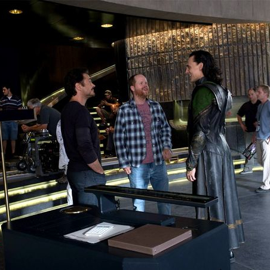
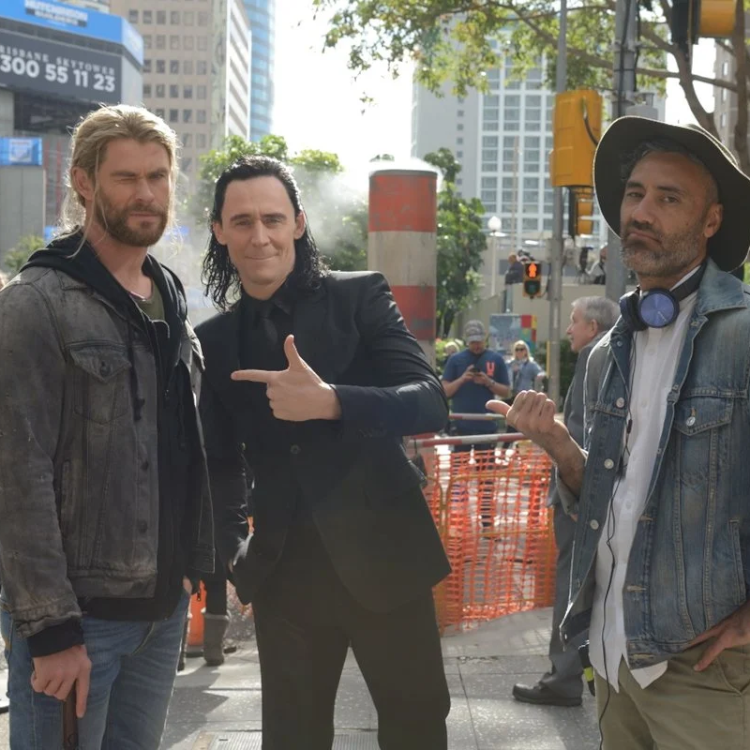
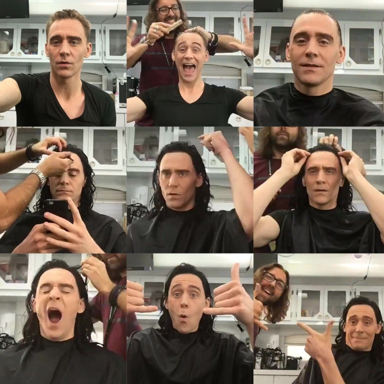
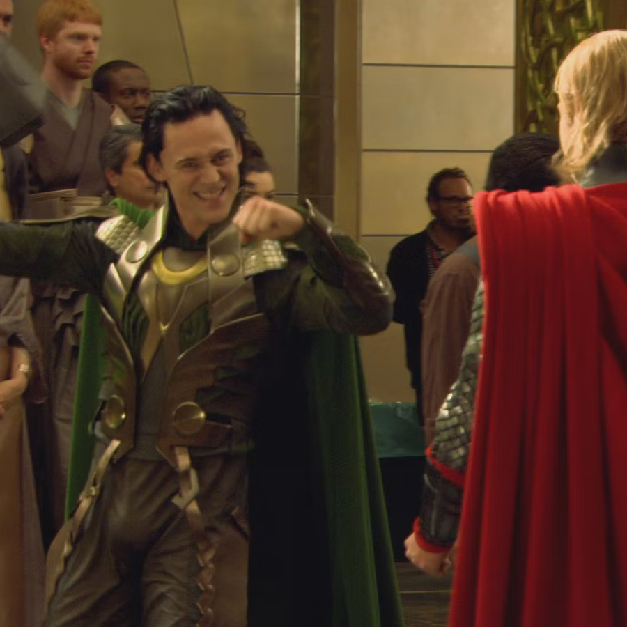
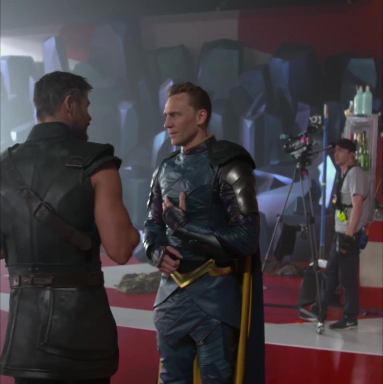
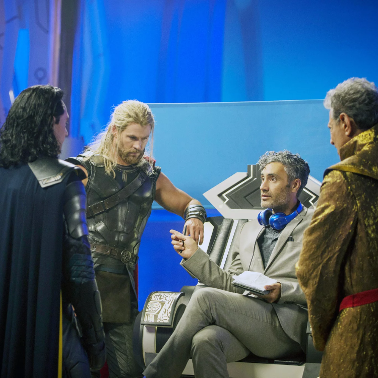

Photos du tournage






Présentation de la direction artistique
Faites connaissance avec l'équipe de la direction artistique
Né et élevé dans le Nord de la France, Pierre Buffin est issu d'une famille d'artistes,
d'architectes et de médecins. Intrigué par la forme, les figures et la lumière, Pierre Buffin a
ensuite affiné la construction de son savoir-faire avec une Majeure en Architecture à Paris.
Durant ses études supérieures, Pierre Buffin s'est facilité la vie en tant qu'illustrateur et
graphiste sur une série de romans graphiques français. Grâce à ce processus, Pierre Buffin, plus
défié par les images 2D sans vie, a découvert l'art de la 3D. En 1984, Pierre Buffin a créé Buf
Compagnie et est depuis devenu un innovateur de premier plan dans l'art des images et des effets
générés par ordinateur pour le cinéma, la publicité et la vidéo. Pierre Buffin, dans ses efforts
pour faciliter l'ambition visuelle de chaque réalisateur, a été largement célébré à la fois à
Hollywood et dans la communauté cinématographique internationale. Sa vision consistant à associer
des compétences graphiques animées de pointe à une véritable gestion artistique sur des projets de
haut niveau a été invoquée par des réalisateurs acclamés tels que Christopher Nolan (The Dark
Knight), Kenneth Branagh (Thor), Ang Lee sur Life of Pi (2013 Academy Award pour les meilleurs
effets visuels), Luc Besson et Wong Kar Wai pour The Grandmaster (2013 Golden Horse Award des
meilleurs effets visuels) entre autres. L'engagement continu de Pierre Buffin envers les
technologies de pointe et le savoir-faire artistique est largement connu pour «l'effet de temps de
balle» vu dans The Matrix, initialement développé pour les clips vidéo de Michel Gondry; et les
techniques de « camera mapping » qui ont permis à David Fincher d'introduire un nouveau langage
visuel dans Fight Club.
Sarah Halley Finn est directrice de casting. Elle a servi de casting dans tous les films MCU sauf
un, tous les One-Shots Marvel et les séries télévisées Marvel's Agent Carter et Marvel's Agents of
S.H.I.E.L.D.. Finn a plus de 100 crédits en tant que directeur de casting. Elle a notamment
travaillé dans le film de 2000 Dracula 2000 (avec Randi Hiller, Eileen Weisinger dans l'équipe),
le film de 2003 S.W.A.T. (avec Louis D'Esposito, Randi Hiller, Sara E. White dans l'équipe), le
film Stealth de 2005 (avec Randi Hiller, J. Michael Riva dans l'équipe), le film de 2009 Couples
Retreat (avec Jon Favreau au casting, et Jon Favreau, Randi Hiller, Dan Lebental, Britni Ziegler
dans l'équipe), le film de 2011 Cowboys & Aliens (avec Jon Favreau, Mark Fergus, Thomas Robinson
Harper, Dan Lebental, Matthew Libatique, Shane Patrick Mahan, Hawk Ostby, Keith Wulard, Britni
Ziegler dans l'équipe), le film Chef de 2014 (avec Jon Favreau au casting et Jon Favreau, Laura
Jean Shannon dans l'équipe) et le film de 2016 Le Livre de la Jungle (avec Jon Favreau au casting
et Jon Favreau, Thomas Robinson Harper, Laura Jean Shannon dans l'équipage).
Kasra Farahani était directrice artistique sur Thor et Captain Marvel et artiste conceptuelle pour
Les Gardiens de la Galaxie Vol. 2 et Panthère noire. Il est également le concepteur de la
production de Loki. Il a été interviewé pour l'épisode Assembled The Making of Loki.
Freeborn a commencé sa carrière au département artistique en tant que mannequin et assistant de
production sur le film de 2000 Les Aventures de Rocky & Bullwinkle. Ce film mettait en vedette
Jason Alexander et mettait également en vedette Whoopi Goldberg, Max Grodénchik et Norman Lloyd.
Le premier projet de Freeborn en tant que scénographe était le film indépendant de 2000 The Last
Man, qui mettait en vedette Star Trek: Voyager régulier Jeri Ryan. Ses crédits de scénographie ont
depuis inclus des films à gros budget comme Pearl Harbor (avec Pat Healy, Glenn Morshower, Randy
Oglesby, Leland Orser, John Pyper-Ferguson, Steve Rankin, Raphael Sbarge, Cary-Hiroyuki et Michael
Shamus Wiles), 2001's Planet of the Apes (avec Erick Avari, Freda Foh Shen, Cary-Hiroyuki, Anne
Ramsay et David Warner), X2 (avec Bruce Davison, Famke Janssen et Patrick Stewart) et The
Chronicles of Riddick (avec Roger R. Cross et Karl Urban). Il a également réalisé un travail de
scénographie non crédité pour le film de science-fiction Minority Report de Steven Spielberg en
2002, mettant en vedette Patrick Kilpatrick et Neal McDonough. Il a de nouveau travaillé avec
Spielberg en tant que scénographe (cette fois crédité) sur le film de 2004 The Terminal (avec Jude
Ciccolella, Michael Nouri et Zoë Saldana). Avant de travailler ensemble sur Star Trek, Freeborn et
Keith Cunningham ont collaboré sur les films Van Helsing et Hostage ; ce dernier film mettait en
vedette Jimmy Bennett, Tina Lifford et Glenn Morshower. Freeborn était scénographe sur ces deux
films. En tant que concepteur de production, Freeborn a travaillé sur le film indépendant Yup Yup
Man de 2000 (avec David Bowe) et sur le court métrage Simplicity de 2002. Plus récemment, il était
concepteur de production sur le film dramatique Take. Freeborn a été assistant directeur
artistique sur la célèbre série comique télévisée Arrested Development, pour laquelle il a
remporté un prix d'excellence en conception de production de la Art Directors Guild en 2004. Il a
ensuite été assistant directeur artistique sur les films xXx: State of the Union ( ayant déjà
conçu des décors pour le premier film, xXx de 2003), Poseidon, The Santa Clause 3: Escape Claus
(avec Michael Dorn), Next (avec Jim Beaver) et Charlie Wilson's War (avec Spencer Garrett, Pasha
Lychnikoff, Brian Markinson, Rachel Nichols et Faran Tahir). Star Trek est le deuxième film de
Freeborn en tant que directeur artistique principal. Le premier était une autre production de
Paramount Pictures, Indiana Jones et le royaume du crâne de cristal de Steven Spielberg.
Sean Haworth est le fils du décorateur primé aux Oscars Edward "Ted" Haworth et d'Anna Wakhévitch,
fille du créateur de théâtre et de cinéma français George Wakhévitch. Né à Los Angeles, il a
grandi dans le sud de la France jusqu'à son retour à Los Angeles pour poursuivre son travail. au
cinéma, Sean a obtenu le proverbial "pied dans la porte" en 1982 en tant qu'assistant artistique
sur Batteries non incluses. Après quelques années d'assistance au département artistique, il est
passé de décorateur à un poste de directeur artistique adjoint sous la direction des concepteurs
de production accomplis Dean Tavoularis et Bo Welch, obtenant finalement l'opportunité de
travailler en tant que directeur artistique sur la planète des singes de Tim Burton pour Designer.
Rick Heinricks. Entre 2000 et 2010, il a contribué en tant que directeur artistique sur des
projets tels que Avatar, Transformers 1&2 et Tron Legacy. À ce jour, il a été impliqué dans le
département artistique sur plus de 50 longs métrages. En 2011, il est passé à Production Design
sur The Thing, une préquelle du film d'horreur classique de John Carpenter de 1982. Plus
récemment, Sean a travaillé sur des projets comme Ender's Game, Goosebumps et Deadpool. Il termine
actuellement une adaptation cinématographique du jeu vidéo classique Sonic the Hedgehog pour
Paramount Pictures.
Todd Holland (né le 13 août 1961) est un réalisateur et producteur de cinéma et de télévision
américain. Il a réalisé plus de 50 épisodes de The Larry Sanders Show, pour lesquels il a reçu un
Emmy, et 26 épisodes de Malcolm in the Middle, pour lesquels il a reçu deux Emmy Awards. Ses longs
métrages incluent The Wizard (1989) et Krippendorf's Tribe (1998).
Randy Hillier (né le 30 mars 1960 à Toronto, dans la province de l'Ontario au Canada) est un
joueur professionnel canadien de hockey sur glace. Il commence le hockey en tant que professionnel
en 1977 dans l'association de hockey de l'Ontario pour les Wolves de Sudbury pour qu'il évoluera
jusqu'en 1980. Il est alors choisi par les Bruins de Boston au cours du repêchage d'entrée dans la
LNH 1980 en cinquième ronde (102e choix) mais passera la saison suivante dans la ligue américaine
de hockey avec les Indians de Springfield puis rejoindra les Blades d'Érié pour la saison d'après.
Au cours de cette même saison 1981-1982 il jouera pour les Bruins de la LNH et gagnera sa place de
titulaire. Il restera trois saisons aux Bruins avant de rejoindre les Penguins de Pittsburgh pour
sept saisons. Il fera partie de l'aventure en 1991 amenant la franchise à gagner la Coupe Stanley.
Il réalise une saison dans la ligue internationale de hockey avant de revenir dans la LNH pour les
Islanders de New York puis les Sabres de Buffalo. Il raccroche ses patins à la fin de la saison
1992-93 après une dernière saison en Autriche. En 1998, il devient l'entraîneur adjoint des
Penguins pour une saison (assistant de Kevin Constantine). Il rempilera en 2001 et restera à ce
poste jusqu'en 2004 (assistant de Ivan Hlinka, Rick Kehoe et Ed Olczyk).
L'œil averti de Lauri Gaffin est clairement visible dans ses photographies exceptionnelles. Elle
capture des images de personnes, de la nature ou même de l'artificialité d'un plateau de tournage,
avec uniquement de la lumière naturelle et en plein format, altérant rarement son intuition sur le
moment fermé. Ainsi, ses photographies enregistrent ses sujets tels qu'ils existent réellement,
mais chacun est imprégné de son point de vue subtil et poétique. Ses photographies parlent avec
une éloquence picturale qui communique son sens de l'humour fantaisiste et son attirance
irrésistible pour la beauté. Lauri Gaffin est photographe depuis les années 1970 tout en
poursuivant son "travail de jour" en tant que décoratrice de décors au succès exceptionnel pour
les longs métrages. Ses photographies sont apparues dans des titres populaires tels que : Fargo,
The Pursuit of Happyness, Six Days Seven Nights, The Ring II, Charlie's Angels I & Charlies's
Angels II, Ironman I & Ironman II et Thor. Lauri a obtenu son BA en photographie à l'UCLA en 1975,
après avoir étudié principalement avec Robert Heineken et avec les artistes Peter Goulds, Rita
Yokoi et la cinéaste Shirley Clark. Elle a obtenu un M.F.A. du California Institute of Fine Arts
en 1977, encadré par l'artiste conceptuel John Baldessari. À CalArts, elle a étudié avec Lauri
Anderson, John Mandel et Michael Kelly et Doug Huebler.
Alexandra Byrne grandit à Stratford-upon-Avon où elle passe son enfance à regarder les pièces de
la Royal Shakespeare Company1. Elle suit des études d'architecture à l'université de Bristol et,
après l'obtention de son diplôme, choisit d'étudier la scénographie. À l'English National Opera
elle étudie sous la tutelle de la costumière Margaret Harris. En 1989, son travail dans la comédie
Some Americans Abroad, de Roger Michell, lui vaut une nomination au Prix Tony pour le meilleur
décor. Après avoir travaillé pour le théâtre pendant une quinzaine d'années, puis un peu pour la
télévision, elle a l'occasion de créer des costumes pour deux petites productions au cinéma. Elle
décide alors d'en faire sa carrière.
Bo Welch, né le 30 novembre 1951 à Yardley (Pennsylvanie), est un réalisateur et chef décorateur
américain. Il sort diplômé en architecture de l'Université de l'Arizona et est engagé dans un
cabinet d'architectes mais, trouvant son travail ennuyeux, il démissionne en 19771. Il commence sa
carrière au cinéma dans le département décoration en 1979. Pour son travail de chef décorateur, il
a remporté le British Academy Film Award des meilleurs décors en 1992 pour Edward aux mains
d'argent et a été nommé quatre fois à l'Oscar des meilleurs décors pour La Couleur pourpre, La
Petite Princesse, Birdcage et Men in Black2. Il est marié depuis 1992 avec l'actrice Catherine
O'Hara, avec qui il a deux enfants, Matthew (né en 1994) et Luke (né en 1997)3.